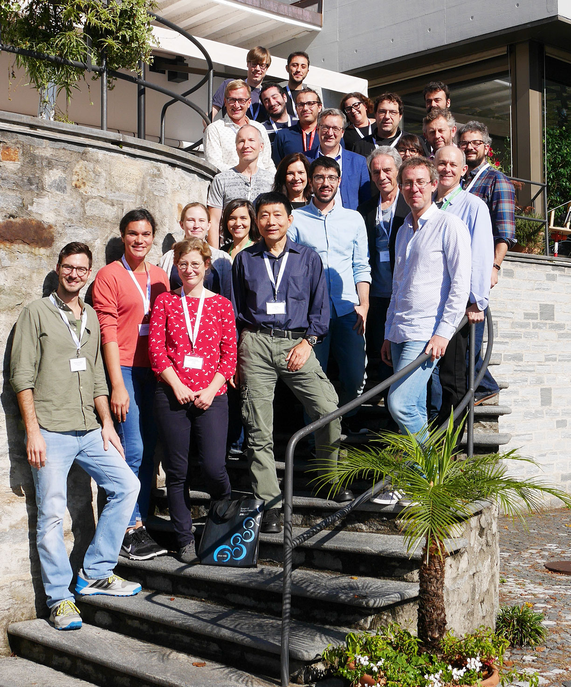

About the SAA
An international network for sequence analysis and related methods
Our mission
The Sequence Analysis Association (SAA) aims to promote research, teaching and diffusion of sequence analysis (SA) and its relationships with related methods. To this end, the SAA
- organises events such as symposia, webinars and training courses,
- collects and shares information on SA-related events, and
- provides links to SA resources — software, books, articles and a shared bibliography.
History
The SAA was founded during the International Symposium on Sequence Analysis and Related Methods (ISSA), held on 10–12 October 2018 at Monte Verità, Ticino, Switzerland. The symposium continued a series of meetings that began with the Lausanne Conference on Sequence Analysis (LaCOSA) in 2012 and LaCOSA II in 2016.

Executive Committee
Emanuela Struffolino University of Milan (IT) · President
Danilo Bolano Bocconi University (IT)
Kevin Emery University of Geneva (CH)
Brendan Halpin University of Limerick (IE)
Satu Helske University of Turku (FI)
Tim F. Liao University of Illinois Urbana-Champaign (US) · President 2023–2024
Raffaella Piccarreta Bocconi University, Milan (IT)
Gilbert Ritschard University of Geneva (CH) · President 2018–2020
Carla Rowold University of Oxford (UK)
Dolores Sesma Carlos University of Valencia (ES)
Matthias Studer University of Geneva (CH) · President 2021–2022
Advisory Board
Andrew Abbott University of Chicago (US) · Honorary President
Silke Aisenbrey Yeshiva University, New York (US)
Torsten Biemann University of Mannheim (DE)
Francesco Billari Bocconi University, Milan (IT)
Benjamin Cornwell Cornell University (US)
Cees Elzinga VU Amsterdam (NL)
Anette Fasang Humboldt University Berlin (DE)
Jacques-Antoine Gauthier University of Lausanne (CH)
Laurent Lesnard CNRS, Sciences Po, Paris (FR)
Marcel Raab University of Bamberg (DE)
Jeroen K. Vermunt Tilburg University (NL)
Annual reports
Statutes
The SAA is a non-profit association under Swiss law with headquarters in Geneva. Its aims, membership rules and organs — General Assembly, Executive Committee, auditors and Advisory Board — are set out in the statutes.
Get involved & contact
Interested in joining? See how to become a member.
You can support the SAA community in several ways:
- Share publications on sequence analysis or related methods — we add them to our Zotero bibliography.
- Tell us about software — new packages and functions in R, Stata, Python or elsewhere that are useful to SA practitioners.
- Propose an event — symposia and workshops can be organised with the support of the SAA; send requests to the Executive Committee.
- Announce events of interest to the community so we can post them on the blog.
Questions, news and event announcements.
Our preferred forum for SAA-related discussion.